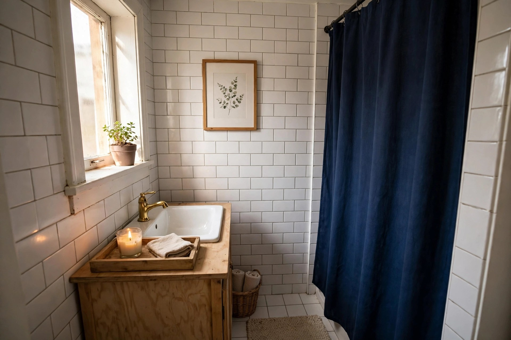

Small Bathroom Storage
Small Bathroom Decor Ideas Under $20
Intro
A small bathroom does not need a renovation to look good — it needs one plant, one tray, and one piece of art. Small decor changes the feel of the room more than big ones, because in a tiny space every object is close to the eye.
This guide has 12 bathroom decor ideas, all under $20. Each one lists what it costs, and most need no tools at all. All are renter-friendly. The trick is to add only things you love and use — a bathroom with three good objects beats one with thirty small ones.

1. One plant that loves humidity — $5–$8
A small plant in a pot on the windowsill or on a shelf makes a bathroom feel alive. Plants like humidity, so a bathroom suits them. Choose a plant that likes low light — a pothos or a fern — and water it when you clean the bathroom.
2. A tray on the vanity — $5–$8
A small tray on the vanity holds hand cream, a small mirror and a candle in one tidy group. Everything in one place, nothing scattered. A tray with raised edges stops things sliding off, and you can lift the whole tray to clean underneath.
3. One framed print on the wall — $5–$10
One framed print above the toilet or beside the mirror adds colour and character. Choose art with one colour that matches the towels, and keep the frame light — heavy frames need proper fixings. Adhesive picture strips hold a small frame with no holes. Keep the frame at eye level, so the art is the first thing you see when you walk in.
4. A new shower curtain — $10–$15
A new shower curtain changes the whole room for about $12. Choose a plain colour — navy, sage or terracotta — and the white tiles will look brighter by contrast. A plain curtain looks more expensive than a patterned one.
5. A woven basket for towels — $6–$10
A woven basket on the floor or on a shelf holds rolled towels and looks like decor, not storage. Rolled towels take up less space, look like a hotel, and you can see every towel at a glance. One basket holds four rolled towels.
6. A scented candle in a jar — $4–$7
A scented candle in a glass jar on the vanity tray makes a small bathroom smell like a spa. Choose a simple scent — lavender, eucalyptus or citrus — and keep the candle away from towels. One candle lasts for weeks. Trim the wick before each use, so the candle burns evenly and lasts longer.
7. A wooden bath mat — $10–$15
A wooden bath mat feels warm underfoot, dries fast, and looks like a spa. It costs about $12 and replaces a damp fabric mat that never dries. Choose a slatted mat, so water drains through it.
8. A small mirror with a shelf — $12–$18
A mirror with a small shelf along its bottom edge holds a toothbrush, a glass and a small plant. It saves the space a separate shelf would take, and everything you need is at hand height. Choose one with a shelf deep enough for a glass, about 10 cm.
9. Matching soap and lotion bottles — $5–$8
Two matching refillable bottles — one for soap, one for lotion — replace mismatched shop bottles and make the vanity look planned. Refillable bottles cost less over time than single bottles, and they look neater too.
10. A small rug that matches the towels — $8–$12
A small rug in the same colour as the towels ties the whole bathroom together. Choose a washable rug, so you can throw it in the machine. One rug is enough — two rugs in a small bathroom look crowded. A rug with a rubber backing stays put on wet tiles and does not slide.
11. A hanging eucalyptus bunch — $3–$5
A small bunch of dried eucalyptus, hung from the shower head, smells wonderful in the steam and looks beautiful. It costs a few dollars, lasts for weeks, and needs no pot or water. Tie it with string and hang it from a hook.
12. One colour, three shades — $0
The cheapest idea costs nothing. Pick one colour you already have — a towel, a curtain, a plant pot — and use three shades of it. Three shades of one colour look planned and calm, while three different colours look busy. This rule works in every small room.
Conclusion
A small bathroom does not need a renovation — it needs one plant, one tray, and one new curtain. Those three things cost under $20, take an afternoon, and change the room completely. Start with the plant, and the bathroom will feel like a spa. Good decor is not about spending more — it is about choosing fewer, better things.
Budget recap
- Plant + pot: ~$7 - Tray + candle: ~$10 - New shower curtain: ~$12
Total for a decorated bathroom: ~$29 — or ~$7 if you start with a plant alone.
Pinterest pin titles
- ""Small Bathroom Decor Ideas Under $20 — 12 Quick Wins""
- ""12 Bathroom Decor Ideas Under $20""
- ""One Weekend, $20: 12 Small Bathroom Decor Ideas""